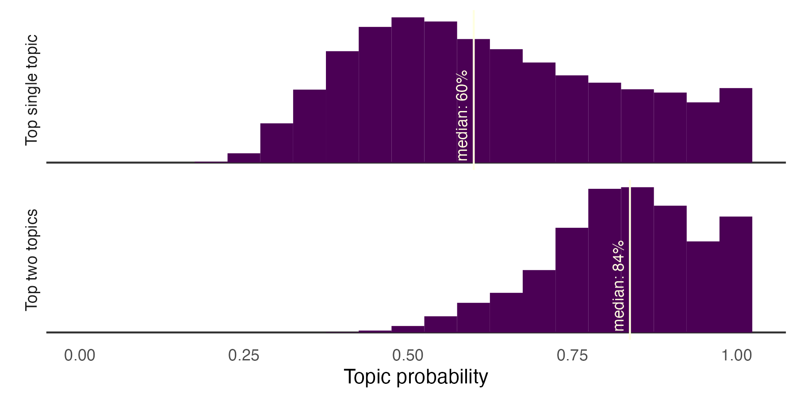
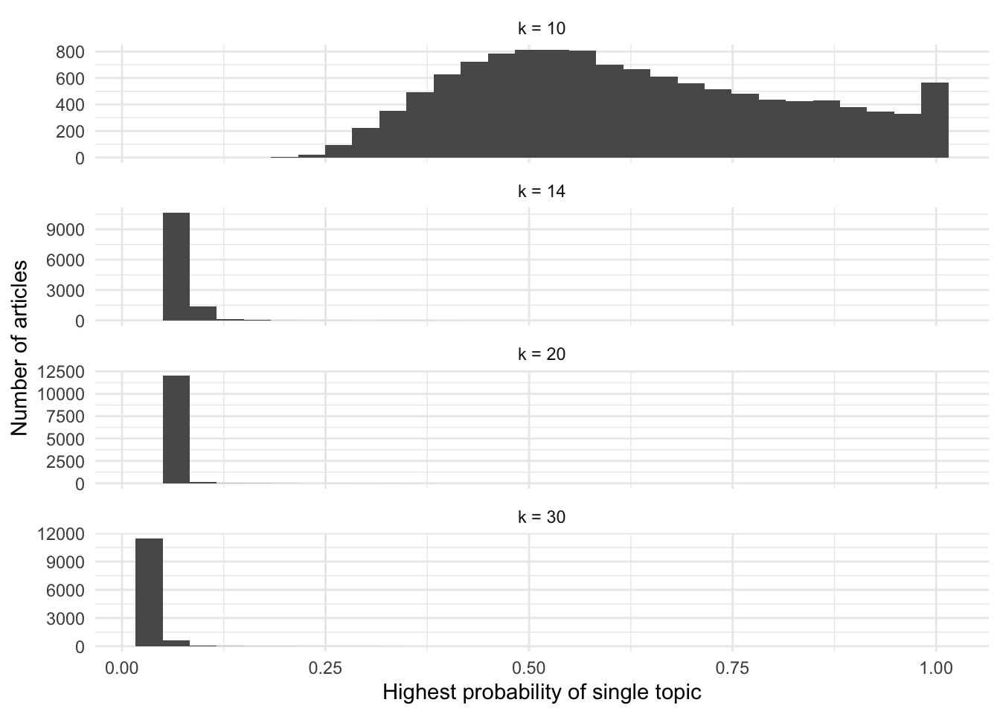
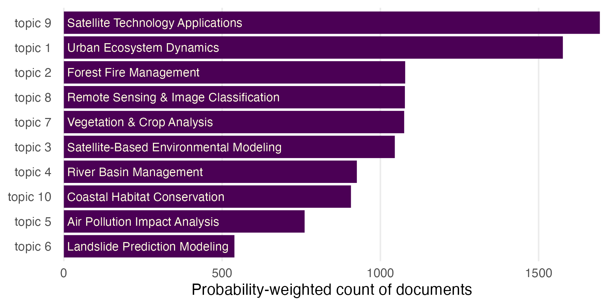
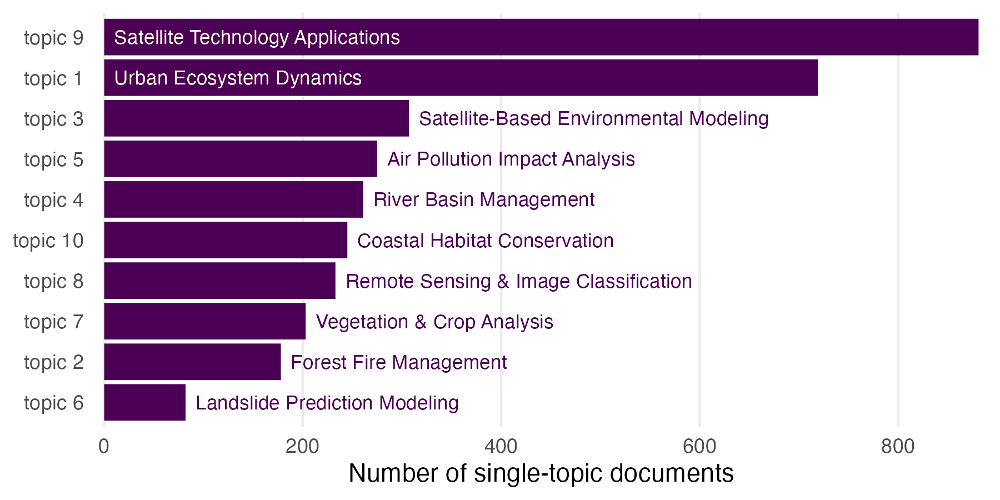
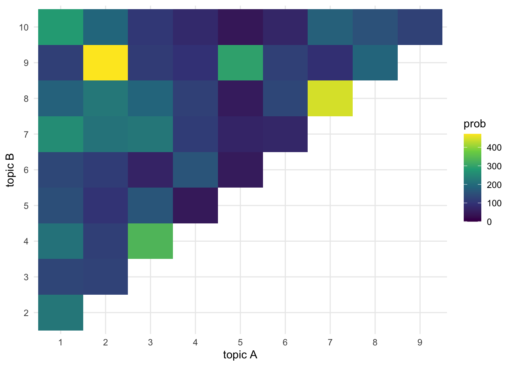
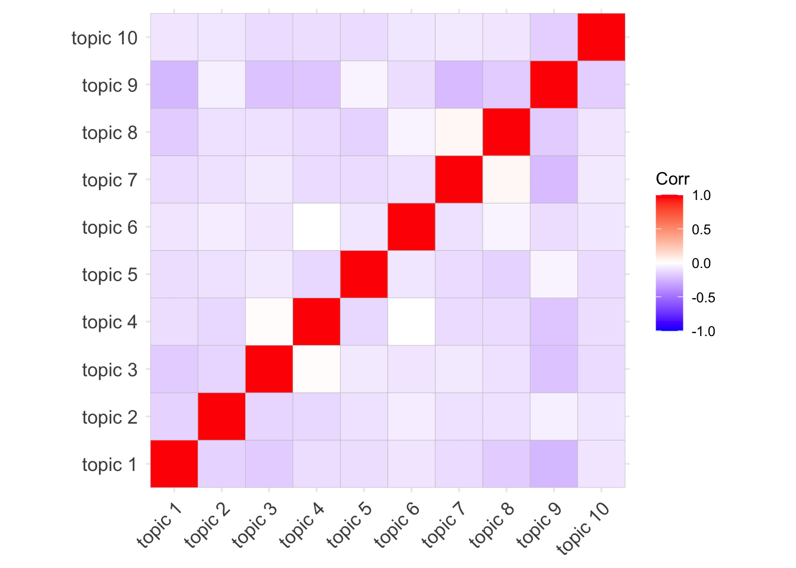

Code
library(tidyverse)
library(here)
library(tidytext)
source(here('common_fxns.R'))library(tidyverse)
library(here)
library(tidytext)
source(here('common_fxns.R'))From the results of the LDA process, let’s try to use ChatGPT to help label topics based on the most important topic words (choose the ten most likely terms per topic)!
term_f <- here('_output/lda_terms_k10.csv')
topic_terms_df <- read_csv(term_f)
topic_terms_text <- topic_terms_df %>%
group_by(topic) %>%
slice_max(prob, n = 10) %>%
summarize(text = paste0(term, collapse = ' ')) %>%
mutate(topic_num = as.numeric(str_extract(topic, '[0-9]+'))) %>%
mutate(text = paste0(topic, ': ', text)) %>%
arrange(topic_num) %>%
select(text)
write_csv(topic_terms_text, here('int', 'topic_terms_k10_txt.csv'))I put this list of topic terms into ChatGPT with the prompt similar to: “Here is a list of topics, each with a set of terms associated with each topic. For each topic, provide a topic name of three words or fewer.” I then provided the list of topics, with associated terms saved above, to the ChatGPT interface. The results were saved in _data/chatgpt/three_word_topics.csv.
topic_labels <- read_csv(here('_data/chatgpt/topic_labels_k10.csv'))
topic_terms_labeled <- topic_labels %>%
mutate(topic = paste('topic', 1:n())) %>%
select(topic, label) %>%
left_join(topic_terms_df, by = 'topic') %>%
mutate(prob = round(prob, 3))
DT::datatable(topic_terms_labeled)For each article, how many topics were identified, and what is the probability distribution of membership in each topic? Articles where no topics were dominant might be only tangentially related to our search. Keep the highest probability topics that add up to at least 75% probability (e.g., if one topic prob is greater than 75%, keep it; if two topics add up to 75%, keep those, etc).
article_topics_all <- read_csv(here('_output/lda_topic_k10.csv')) %>%
left_join(read_csv(here('_data/results_clean_text.csv')), by = 'doc_id') %>%
filter(field == 'title')
article_topics <- article_topics_all %>%
group_by(doc_id) %>%
arrange(prob) %>%
mutate(p_sum = cumsum(prob)) %>%
filter(p_sum > 0.25) %>%
ungroup() %>%
left_join(topic_labels, by = 'topic') %>%
select(doc_id, title = text, label, prob, sub1, sub2, sub3, topic)
n_topics <- article_topics %>% group_by(doc_id, title) %>% summarize(n = n())
table(n_topics$n)
1 2 3 4 5 6
3384 6114 2423 265 12 1 top_match_df <- article_topics %>%
group_by(doc_id, title) %>%
filter(prob == max(prob)) %>%
mutate(type = 'Top single topic')
top2_match_df <- article_topics %>%
mutate(topic = str_extract(topic, '[0-9]+') %>% as.numeric()) %>%
group_by(doc_id, title) %>%
slice_max(prob, n = 2) %>%
arrange(topic) %>%
summarize(prob = sum(prob),
tpx = paste0(topic, collapse = '-')) %>%
mutate(type = 'Top two topics')
top_matches_df <- bind_rows(top_match_df, top2_match_df)
summary_matches_df <- top_matches_df %>%
group_by(type) %>%
summarize(med = median(prob),
label = paste0('median: ', round(100 * med), '%'))
p <- ggplot(top_matches_df, aes(x = prob)) +
geom_hline(yintercept = 0, color = 'grey20') +
geom_histogram(fill = hcl.colors(1), show.legend = FALSE, bins = 21) +
geom_vline(data = summary_matches_df, aes(xintercept = med), color = 'lightyellow') +
geom_text(data = summary_matches_df, aes(x = med, label = label), y = 10,
angle = 90, hjust = 0, vjust = 0, nudge_y = 10, nudge_x = -.01,
size = 3, color = 'lightyellow') +
labs(x = 'Topic probability',
y = 'Number of articles') +
theme_minimal() +
theme(axis.text.y = element_blank(),
axis.title.y = element_blank(),
panel.grid = element_blank(),
panel.background = element_blank()) +
xlim(c(0, NA)) +
facet_wrap(~ type, ncol = 1, scales = 'free_y',
strip.position = 'left')
ggsave('topic_prob.png', width = 6, height = 3)
knitr::include_graphics('topic_prob.png')
Compare the \(k=10\) set to other pulled versions: \(k=20\) (post-lemmatization), \(k=14, 30\) (pre-lemmatization).
topic14_df <- read_csv(here('_output/lda_topic_k14.csv')) %>% mutate(k = 14)
topic20_df <- read_csv(here('_output/lda_topic_k20.csv')) %>% mutate(k = 20)
topic30_df <- read_csv(here('_output/lda_topic_k30.csv')) %>% mutate(k = 30)
top_prob_df <- top_match_df %>%
mutate(k = 10) %>%
bind_rows(topic20_df) %>%
bind_rows(topic14_df) %>%
bind_rows(topic30_df) %>%
arrange(k, doc_id, -prob, topic) %>%
group_by(doc_id, k) %>%
filter(prob == max(prob)) %>%
mutate(k = paste('k =', k))
ggplot(top_prob_df, aes(x = prob)) +
geom_histogram() +
theme_minimal() +
labs(x = 'Highest probability of single topic',
y = 'Number of articles') +
facet_wrap( ~ k, ncol = 1, scales = 'free_y') +
theme_minimal()
If we classify each article according to its top topic matches, weighted by probability of those matches, what is the distribution of articles per topic?
topic_top_match <- article_topics %>%
group_by(topic, label) %>%
summarize(sum_prob = sum(prob), .groups = 'drop') %>%
mutate(label = fct_reorder(label, sum_prob)) %>%
mutate(topic = fct_reorder(topic, sum_prob),
lbl_pos = ifelse(sum_prob > 400, 0, sum_prob),
lbl_clr = ifelse(sum_prob > 400, 'light', 'dark'))
p <- ggplot(topic_top_match, aes(y = topic, x = sum_prob)) +
geom_col(fill = hcl.colors(1)) +
geom_text(aes(label = label, x = lbl_pos + 10, color = lbl_clr),
size = 3, hjust = 0, show.legend = FALSE) +
theme_minimal() +
scale_x_continuous(expand = c(0.01, 0.01)) +
scale_color_manual(values = c('dark' = hcl.colors(1), 'light' = 'lightyellow')) +
labs(x = 'Probability-weighted count of documents') +
theme(axis.title.y = element_blank(),
panel.grid.minor = element_blank(),
panel.grid.major.y = element_blank())
ggsave('article_weight_per_topic.png', width = 6, height = 3)
knitr::include_graphics('article_weight_per_topic.png')
Examine the cooccurrence of topics - which topics occur most frequently together?
topic_singles <- top2_match_df %>%
filter(!str_detect(tpx, '-')) %>%
mutate(topic = paste('topic', tpx)) %>%
group_by(topic) %>%
summarize(n = n()) %>%
left_join(topic_labels, by = 'topic') %>%
mutate(topic = fct_reorder(topic, n),
lbl_pos = ifelse(n > 400, 0, n),
lbl_clr = ifelse(n > 400, 'light', 'dark'))
p <- ggplot(topic_singles, aes(y = topic, x = n)) +
geom_col(fill = hcl.colors(1)) +
geom_text(aes(label = label, x = lbl_pos + 10, color = lbl_clr),
size = 3, hjust = 0, show.legend = FALSE) +
theme_minimal() +
scale_x_continuous(expand = c(0.01, 0.01)) +
scale_color_manual(values = c(hcl.colors(1), 'lightyellow')) +
labs(x = 'Number of single-topic documents') +
theme(axis.title.y = element_blank(),
panel.grid.minor = element_blank(),
panel.grid.major.y = element_blank())
ggsave('article_count_per_topic.png', width = 6, height = 3)
knitr::include_graphics('article_count_per_topic.png')
topic_pairs <- top2_match_df %>%
filter(str_detect(tpx, '-')) %>%
group_by(tpx) %>%
summarize(n = n(),
prob = sum(prob)) %>%
separate(tpx, into = c('x', 'y'), sep = '-') %>%
mutate(x = as.numeric(x) %>% factor(),
y = as.numeric(y) %>% factor())
ggplot(topic_pairs, aes(x, y, fill = prob)) +
geom_tile() +
theme_minimal() +
scale_fill_viridis_c(limits = c(0, NA)) +
labs(x = 'topic A', y = 'topic B')
Now we see that most papers have at most two highly probable topics, and there are a few topic pairs that occur more frequently.
Examine a correlation matrix to see if any topics are closely correlated…
topic_mtx <- article_topics_all %>%
select(doc_id, topic, prob) %>%
pivot_wider(names_from = topic, values_from = prob) %>%
column_to_rownames('doc_id') %>%
as.matrix()
cor_mtx <- cor(topic_mtx)
ggcorrplot::ggcorrplot(cor_mtx)
cor_vec <- as.vector(cor_mtx) %>%
.[. != 1]
summary(cor_vec) Min. 1st Qu. Median Mean 3rd Qu. Max.
-0.23590 -0.13431 -0.10534 -0.10729 -0.08022 0.03461 The correlations all seem quite low. This probably makes sense since, like a PCA or similar, the LDA is probably coming up with fairly orthogonal definitions of topics.